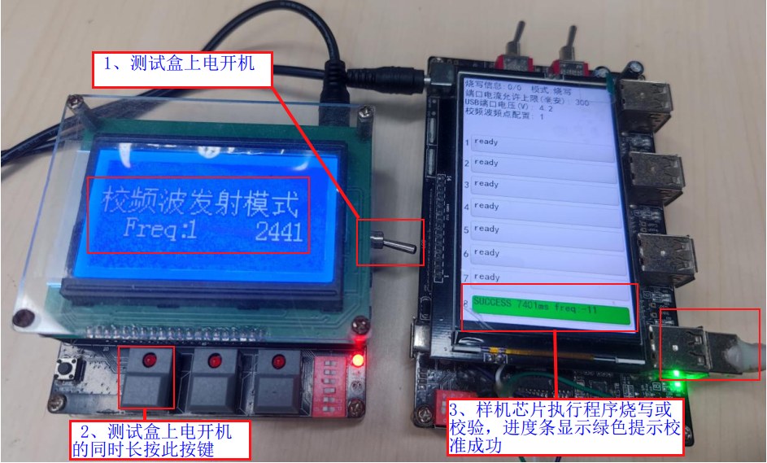

2.15. Frequency Offset Calibration
2.15.1. Use case
In the normal production process, device frequency offset calibration is performed one device at a time with a test box. To eliminate the separate frequency offset calibration step, the devices' frequency offset is calibrated indirectly through a test box while the 1-to-8 programmer programs the chip firmware in mass production, which improves production efficiency.
2.15.2. Calibration overview
Principle
The test box works in calibration signal transmit mode, continuously transmitting a reference signal as the reference source. After the 1-to-8 programmer has programmed the code into the device's chip, it puts the device into frequency offset calibration mode,
and the device's chip continuously receives the reference signal sent by the test box, using it as the reference source to calibrate its own frequency offset.
Device frequency offset calibration calibrates the reference frequency. After the frequency offset calibration, the programmer programs the calibration parameters into a designated storage area of the chip, and the SDK reads them directly for frequency compensation; customers do not need to be concerned with the implementation details.
Tool versions required for frequency offset calibration
Tool
Firmware version (or later)
Hardware version (or later)
Supported chip models
Test box
V1.2.5.a
1T2_Test_BOX_V2.3
Bluetooth series chips
1-to-8 programmer
V3.1.13
Any
AC695X, AD697N, AC897N, AD698N, AC700N,
JL700N, AC701N, JL701N, AC706N, AC707N,
JL708N, JL709N, JL710N, AC710N, AW30N
2.15.3. Calibration procedure
Upgrading the tool firmware
To perform frequency offset calibration with the 1-to-8 programmer, upgrade both the 1-to-8 programmer and the test box to firmware versions that support frequency offset calibration.
On the programmer, check the "Frequency offset test" (频偏测试) option and configure the "Calibration signal frequency point configuration" (校频波频点配置) parameter, as shown in Programmer frequency calibration configuration:

Programmer frequency calibration configuration
By default, the programmer does not test the frequency offset. If a frequency offset test is required, check the "Frequency offset test" (频偏测试) option in the programming options of the PC tool when updating the target chip fw file. Be sure to follow these precautions: in designs with the frequency offset test enabled, you must not modify the parameters of
clk_init_osc_cap(u8,u8)insetup.cin the sdk; otherwise, the calibration result will be inaccurate. Check and confirm this with the development engineers before programming!After checking "Frequency offset test" (频偏测试), configure the "Calibration signal frequency point configuration" (校频波频点配置) parameter
Note
The "Calibration signal frequency point configuration" parameter must be set identically for the programmers and the test box of the same set. The default value is 1 (the default can be used in a shielded environment or when the programmer is very close to the test box; one set, i.e. one test box, can serve frequency calibration for multiple programmers). Values 0~4 are in-band and 5~9 are out-of-band; in an environment with severe 2.4G interference, out-of-band frequency points are recommended;
When multiple sets of test boxes and programmers are used in an unshielded environment, set a different frequency point for each set to avoid interference;
In the function settings screen of the test box PC tool, set "Calibration signal frequency point configuration" (校频波频点配置) to the same value as the programmer's parameter, as shown in Test box frequency calibration configuration:

Test box frequency calibration configuration
Frequency offset calibration process
[1] Power on the test box and long-press the button to enter "Calibration signal transmit mode" (校频波发射模式)
[2] Power on the programmer and set up the programming environment (keep the test box as close to the devices as possible)
[3] Program or verify the devices; frequency offset calibration is performed after programming or verification (the official release firmware supports frequency offset calibration only in programming and verification modes)
[4] Judging the calibration result: 1. Calibration succeeded: the progress bar is green; 2. Calibration failed: the progress bar is red (with an error message such as "Frequency offset calibration failed" (频偏校准失败));
as shown in Frequency offset calibration process:

Frequency offset calibration process
AW30N frequency offset calibration instructions
AW30N frequency offset calibration differs from that of other models: for this model, the test box's "Calibration signal frequency point configuration" (校频波频点配置) currently supports only one frequency point, and the test box must be upgraded to a special version whose firmware has the frequency point fixed; the programmer's deployment screen also cannot configure the frequency point for now. The mode is entered in the same way as in point 4. Special test box firmware that transmits the calibration signal used to calibrate the AW30N frequency offset: click here to download the special test box version
For how to upgrade the test box, see Example of upgrading the test box master and slave units with the attached special version:
Example of upgrading the test box master and slave units with the attached special version
2.15.4. Notes
A test box with an active crystal oscillator is recommended (test box hardware version 1T2_Test_BOX_V2.3 or later), to ensure that the reference transmitted by the test box is accurate.
For this test, both the devices and the test box should be placed inside a shielded box as far as possible, to prevent the external environment from affecting calibration accuracy.
In designs with the frequency offset test enabled, you must not modify the parameters of
clk_init_osc_cap(u8,u8)insetup.cin the sdk; otherwise, the calibration result will be inaccurate. Check and confirm this with the development engineers before programming!When the frequency offset test is enabled, be sure to turn on the test box and put it into "Calibration signal transmit mode" (校频波发射模式), and the "Calibration signal frequency point configuration" (校频波频点配置) of the test box and the programmers of the same set must be set identically; otherwise, the 1-to-8 programmer reports "Frequency offset calibration timeout" (频偏校准超时) during programming.